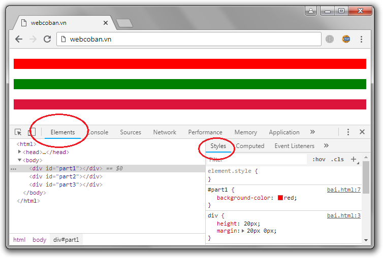
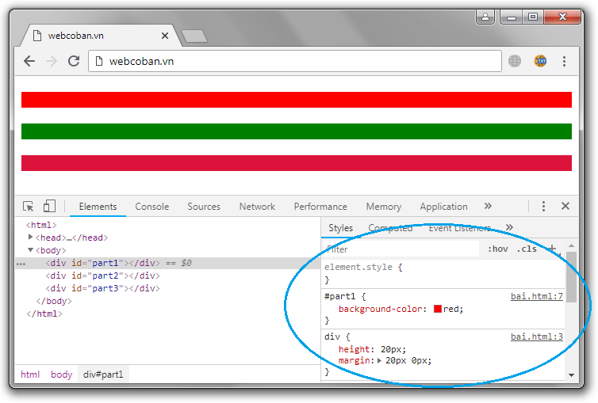
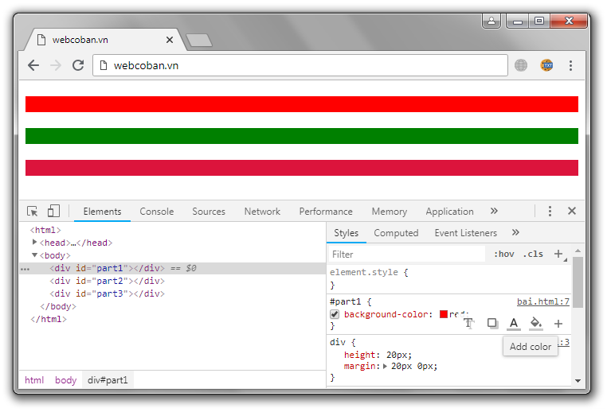
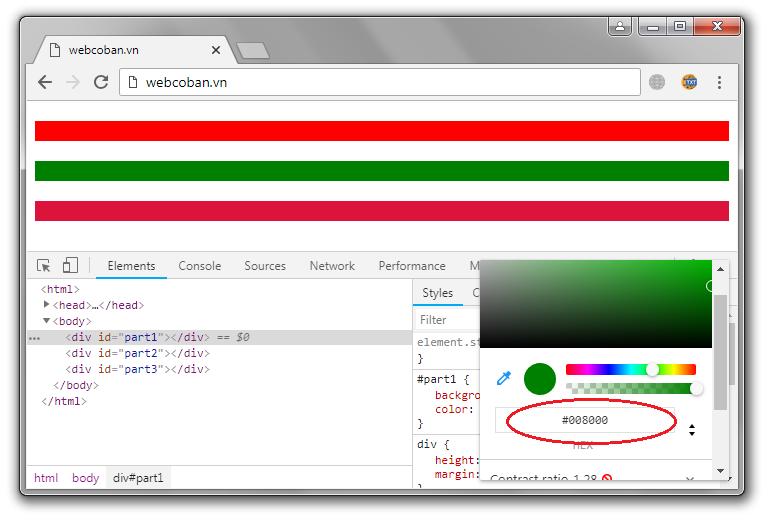

Cách xác định giá trị của một màu sắc trong CSS
- Trong CSS, màu sắc có thể được xác định dựa theo một trong sáu loại giá trị:
|
- Tuy nhiên, trong số sáu loại giá trị dùng để xác định màu sắc thì thông thường các lập trình viên chỉ sử dụng chủ yếu bốn loại:
|
- Nếu muốn thiết lập chữ màu đỏ cho một phần tử nào đó thì thuộc tính color của phần tử đó phải nhận một trong các giá trị như sau:
| red | - Xác định dựa theo tên màu |
| rgb(255,0,0) | - Xác định dựa theo giá trị RGB |
| #ff0000 | - Xác định dựa theo giá trị HEX |
| rgba(255,0,0,1) | - Xác định dựa theo giá trị RGBA |
| hsl(0,100%,50%) | - Xác định dựa theo giá trị HSL |
| hsla(0,100%,50%,1) | - Xác định dựa theo giá trị HSLA |
1) TÊN MÀU
- Dưới đây là danh sách các "tên màu" được hỗ trợ trong CSS:
| AliceBlue | rgb(240,248,255) | #F0F8FF | |
| AntiqueWhite | rgb(250,235,215) | #FAEBD7 | |
| Aqua | rgb(0,255,255) | #00FFFF | |
| Aquamarine | rgb(127,255,212) | #7FFFD4 | |
| Azure | rgb(240,255,255) | #F0FFFF | |
| Beige | rgb(245,245,220) | #F5F5DC | |
| Bisque | rgb(255,228,196) | #FFE4C4 | |
| Black | rgb(0,0,0) | #000000 | |
| BlanchedAlmond | rgb(255,235,205) | #FFEBCD | |
| Blue | rgb(0,0,255) | #0000FF | |
| BlueViolet | rgb(138,43,226) | #8A2BE2 | |
| Brown | rgb(165,42,42) | #A52A2A | |
| BurlyWood | rgb(222,184,135) | #DEB887 | |
| CadetBlue | rgb(95,158,160) | #5F9EA0 | |
| Chartreuse | rgb(127,255,0) | #7FFF00 | |
| Chocolate | rgb(210,105,30) | #D2691E | |
| Coral | rgb(255,127,80) | #FF7F50 | |
| CornflowerBlue | rgb(100,149,137) | #6495ED | |
| Cornsilk | rgb(255,248,220) | #FFF8DC | |
| Crimson | rgb(220,20,60) | #DC143C | |
| Cyan | rgb(0,255,255) | #00FFFF | |
| DarkBlue | rgb(0,0,139) | #00008B | |
| DarkCyan | rgb(0,139,139) | #008B8B | |
| DarkGoldenRod | rgb(184,134,11) | #B8860B | |
| DarkGray | rgb(169,169,169) | #A9A9A9 | |
| DarkGreen | rgb(0,100,0) | #006400 | |
| DarkGrey | rgb(169,169,169) | #A9A9A9 | |
| DarkKhaki | rgb(189,183,107) | #BDB76B | |
| DarkMagenta | rgb(139,0,139) | #8B008B | |
| DarkOliveGreen | rgb(85,107,47) | #556B2F | |
| Darkorange | rgb(255,140,0) | #FF8C00 | |
| DarkOrchid | rgb(153,50,204) | #9932CC | |
| DarkRed | rgb(139,0,0) | #8B0000 | |
| DarkSalmon | rgb(233,150,122) | #E9967A | |
| DarkSeaGreen | rgb(143,188,143) | #8FBC8F | |
| DarkSlateBlue | rgb(72,61,139) | #483D8B | |
| DarkSlateGray | rgb(47,79,79) | #2F4F4F | |
| DarkSlateGrey | rgb(47,79,79) | #2F4F4F | |
| DarkTurquoise | rgb(0,206,209) | #00CED1 | |
| DarkViolet | rgb(248,0,211) | #9400D3 | |
| DeepPink | rgb(255,20,147) | #FF1493 | |
| DeepSkyBlue | rgb(0,191,255) | #00BFFF | |
| DimGray | rgb(105,105,105) | #696969 | |
| DimGrey | rgb(105,105,105) | #696969 | |
| DodgerBlue | rgb(30,144,255) | #1E90FF | |
| FireBrick | rgb(178,34,34) | #B22222 | |
| FloralWhite | rgb(255,250,240) | #FFFAF0 | |
| ForestGreen | rgb(34,139,34) | #228B22 | |
| Fuchsia | rgb(255,0,255) | #FF00FF | |
| Gainsboro | rgb(220,220,220) | #DCDCDC | |
| GhostWhite | rgb(248,248,255) | #F8F8FF | |
| Gold | rgb(255,215,0) | #FFD700 | |
| GoldenRod | rgb(218,165,32) | #DAA520 | |
| Gray | rgb(218,218,218) | #808080 | |
| Green | rgb(0,218,0) | #008000 | |
| Grey | rgb(218,218,218) | #808080 | |
| GreenYellow | rgb(173,255,47) | #ADFF2F | |
| HoneyDew | rgb(240,255,240) | #F0FFF0 | |
| HotPink | rgb(255,105,180) | #FF69B4 | |
| IndianRed | rgb(205,90,90) | #CD5C5C | |
| Indigo | rgb(75,0,130) | #4B0082 | |
| Ivory | rgb(255,255,240) | #FFFFF0 | |
| Khaki | rgb(240,230,140) | #F0E68C | |
| Lavender | rgb(230,230,230) | #E6E6FA | |
| LavenderBlush | rgb(255,240,245) | #FFF0F5 | |
| LawnGreen | rgb(124,252,0) | #7CFC00 | |
| LemonChiffon | rgb(255,250,205) | #FFFACD | |
| LightBlue | rgb(173,216,230) | #ADD8E6 | |
| LightCoral | rgb(240,128,128) | #F08080 | |
| LightCyan | rgb(224,255,255) | #E0FFFF | |
| LightGoldenRodYellow | rgb(250,250,210) | #FAFAD2 | |
| LightGray | rgb(211,211,211) | #D3D3D3 | |
| LightGreen | rgb(144,238,144) | #90EE90 | |
| LightGrey | rgb(211,211,211) | #D3D3D3 | |
| LightPink | rgb(255,182,193) | #FFB6C1 | |
| LightSalmon | rgb(255,160,122) | #FFA07A | |
| LightSeaGreen | rgb(32,178,170) | #20B2AA | |
| LightSkyBlue | rgb(135,206,250) | #87CEFA | |
| LightSlateGray | rgb(119,136,153) | #778899 | |
| LightSlateGrey | rgb(119,136,153) | #778899 | |
| LightSteelBlue | rgb(176,196,222) | #B0C4DE | |
| LightYellow | rgb(255,255,224) | #FFFFE0 | |
| Lime | rgb(0,255,0) | #00FF00 | |
| LimeGreen | rgb(50,205,50) | #32CD32 | |
| Linen | rgb(250,240,230) | #FAF0E6 | |
| Magenta | rgb(255,0,255) | #FF00FF | |
| Maroon | rgb(128,0,0) | #800000 | |
| MediumAquaMarine | rgb(102,205,170) | #66CDAA | |
| MediumBlue | rgb(0,0,205) | #0000CD | |
| MediumOrchid | rgb(186,85,211) | #BA55D3 | |
| MediumPurple | rgb(147,112,216) | #9370D8 | |
| MediumSeaGreen | rgb(60,179,113) | #3CB371 | |
| MediumSlateBlue | rgb(123,104,238) | #7B68EE | |
| MediumSpringGreen | rgb(0,250,154) | #00FA9A | |
| MediumTurquoise | rgb(72,209,204) | #48D1CC | |
| MediumVioletRed | rgb(199,21,133) | #C71585 | |
| MidnightBlue | rgb(25,25,112) | #191970 | |
| MintCream | rgb(245,255,250) | #F5FFFA | |
| MistyRose | rgb(255,228,225) | #FFE4E1 | |
| Moccasin | rgb(255,228,181) | #FFE4B5 | |
| NavajoWhite | rgb(255,222,173) | #FFDEAD | |
| Navy | rgb(0,0,128) | #000080 | |
| OldLace | rgb(253,245,230) | #FDF5E6 | |
| Olive | rgb(128,128,0) | #808000 | |
| OliveDrab | rgb(107,142,35) | #6B8E23 | |
| Orange | rgb(255,165,0) | #FFA500 | |
| OrangeRed | rgb(255,69,0) | #FF4500 | |
| Orchid | rgb(218,112,214) | #DA70D6 | |
| PaleGoldenRod | rgb(238,232,170) | #EEE8AA | |
| PaleGreen | rgb(152,251,152) | #98FB98 | |
| PaleTurquoise | rgb(175,238,238) | #AFEEEE | |
| PaleVioletRed | rgb(216,112,147) | #D87093 | |
| PapayaWhip | rgb(255,239,213) | #FFEFD5 | |
| PeachPuff | rgb(255,218,185) | #FFDAB9 | |
| Peru | rgb(205,133,63) | #CD853F | |
| Pink | rgb(255,192,203) | #FFC0CB | |
| Plum | rgb(221,160,221) | #DDA0DD | |
| PowderBlue | rgb(176,224,230) | #B0E0E6 | |
| Purple | rgb(128,0,128) | #800080 | |
| Red | rgb(255,0,0) | #FF0000 | |
| RosyBrown | rgb(188,143,143) | #BC8F8F | |
| RoyalBlue | rgb(65,105,225) | #4169E1 | |
| SaddleBrown | rgb(139,69,19) | #8B4513 | |
| Salmon | rgb(250,128,114) | #FA8072 | |
| SandyBrown | rgb(244,164,96) | #F4A460 | |
| SeaGreen | rgb(46,139,87) | #2E8B57 | |
| SeaShell | rgb(255,245,238) | #FFF5EE | |
| Sienna | rgb(160,82,45) | #A0522D | |
| Silver | rgb(192,192,192) | #C0C0C0 | |
| SkyBlue | rgb(135,206,235) | #87CEEB | |
| SlateBlue | rgb(106,90,255) | #6A5ACD | |
| SlateGray | rgb(112,128,144) | #708090 | |
| SlateGrey | rgb(112,128,144) | #708090 | |
| Snow | rgb(255,250,250) | #FFFAFA | |
| SpringGreen | rgb(0,255,127) | #00FF7F | |
| SteelBlue | rgb(70,130,180) | #4682B4 | |
| Tan | rgb(210,180,140) | #D2B48C | |
| Teal | rgb(0,128,128) | #008080 | |
| Thistle | rgb(216,191,216) | #D8BFD8 | |
| Tomato | rgb(255,99,71) | #FF6347 | |
| Turquoise | rgb(64,224,208) | #40E0D0 | |
| Violet | rgb(238,130,238) | #EE82EE | |
| Wheat | rgb(245,222,179) | #F5DEB3 | |
| White | rgb(255,255,255) | #FFFFFF | |
| WhiteSmoke | rgb(245,245,245) | #F5F5F5 | |
| Yellow | rgb(255,255,0) | #FFFF00 | |
| YellowGreen | rgb(145,205,50) | #9ACD32 |
- Lưu ý: Tên màu không phân biệt chữ in hoa hay chữ thường, ví dụ như ba giá trị GREEN Green green đều có chung một ý nghĩa.
2) GIÁ TRỊ RGB
- Dưới đây là cú pháp dùng để xác định một giá trị RGB:
- Trong đó, các tham số red - green - blue phải là một số nguyên trong đoạn từ 0 đến 255.
| 0 | 0 | 0 |
|
rgb(0,0,0)
|
||
- Lưu ý: Khi giá trị của các tham số red - green - blue càng lớn thì màu sắc sẽ càng trở nên sáng hơn, ví dụ như giá trị rgb(0,0,0) là màu đen thì giá trị rgb(255,255,255) chính là màu trắng.
3) GIÁ TRỊ HEX
- Dưới đây là cú pháp dùng để xác định một giá trị HEX:
- Gần giống với giá trị RGB, giá trị HEX được tạo nên bởi ba tham số red (rr), green (gg), blue (bb).
- Tuy nhiên, điểm khác nhau chính là mỗi tham số của giá trị HEX phải được xác định bởi hai ký tự, mỗi ký tự phải là một chữ cái (a, b, c, d, e, f) hoặc một số nguyên (0, 1, 2, 3, 4, 5, 6, 7, 8, 9)
| #008000 | |
| #0000fe | |
| #ff0000 | |
| #ffa500 | |
| #000000 | |
| #00ffde |
MỘT SỐ ĐIỀU CẦN LƯU Ý:
- Đối với loại giá trị HEX, các ký tự không phân biệt trường hợp chữ in hoa hay chữ thường, ví dụ như hai giá trị #ff00de và #FF00DE đều có chúng một ý nghĩa.
- Màu sắc sẽ sáng dần khi giá trị của các tham số tăng dần từ 00 lên FF.
- Giá trị HEX cũng có thể được viết dưới dạng 3 ký tự (một ký tự sẽ đại diện cho cả hai), ví dụ:
- #000 tương đương với #000000
- #DDD tương đương với #DDDDDD
- #0DF tương đương với #00DDFF
- #DEF tương đương với #DDEEFF
4) GIÁ TRỊ RGBA
- Dưới đây là cú pháp dùng để xác định một giá trị RGBA:
- Như chúng ta đã thấy, giá trị RGBA khá giống với giá trị RGB. Tuy nhiên, nó có thêm một tham số alpha (tham số alpha dùng để xác định mức độ trong suốt của màu sắc, nó phải nhận giá trị là một số trong đoạn 0 - 1, mức độ trong suốt sẽ tăng dần khi giá trị giảm dần từ 1 xuống 0)
| 0 | 0 | 0 | 1 |
|
rgba(0,0,0,1)
|
|||
5) SỬ DỤNG CHROME ĐỂ XÁC ĐỊNH GIÁ TRỊ CỦA MỘT MÀU SẮC
 |
- Ví dụ như khi đang lướt web, các bạn thấy một phần tử nào đó có màu đẹp quá, các bạn muốn lấy giá trị của màu sắc đó để sử dụng (nhưng không biết phải làm như thế nào) - Thì ở trong phần này, tôi sẽ hướng dẫn các bạn cách sử dụng trình duyệt Chrome để xác định giá trị của một màu sắc được hiển thị trên trang web. |
- Bước 1: Bấm phím F12 hoặc tổ hợp phím Ctrl + Shift + C tại trang web chứa màu sắc mà các bạn muốn xác định, nhìn trên thanh menu chính chọn tab Elements, sau đó chọn tab Styles.

- Bước 2: Nhìn cụm bên phải, các bạn sẽ thấy ở đó có một số bộ định dạng.

- Bước 3: Di chuyển con trỏ vào góc phải phía dưới của một bộ định dạng bất kỳ thì các bạn sẽ thấy ở đó có một số tùy chọn (tại đây chọn Add color)

- Bước 4: Sau khi đã chọn Add color, nếu các bạn nhấp chuột trái vào bất kỳ một vị trí nào trên trang web thì giá trị của màu sắc nằm tại vị trí đó sẽ được hiển thị bên trong khung (khoanh màu đỏ)
